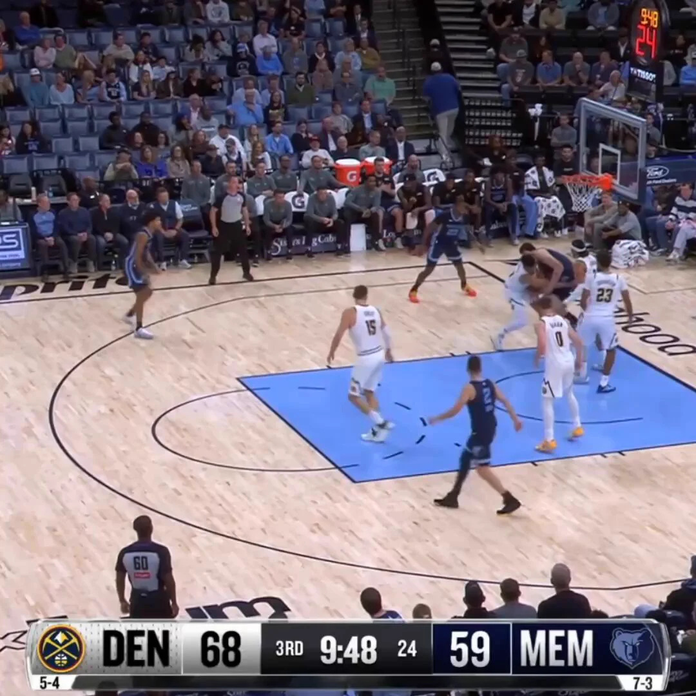
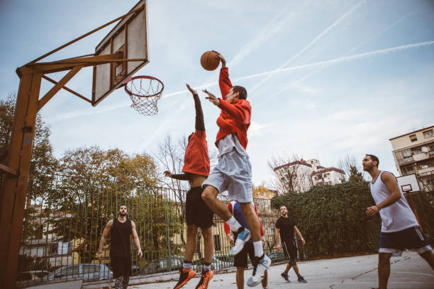
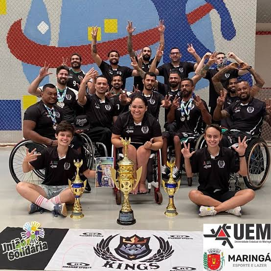

Tipos de Basquete
Conheça as três modalidades, suas características, regras e diferenças.
Comparação entre as modalidades
| Característica | Tradicional (5x5) | Basquete 3x3 | Cadeira de rodas |
|---|---|---|---|
| Jogadores | 5 por equipe | 3 por equipe | 5 por equipe |
| Quadra | 28 x 15 metros | 15 x 11 metros | 28 x 15 metros |
| Duração | 4 quartos de 10 min | 10 min ou 21 pontos | 4 quartos de 10 min |
| Tempo de ataque | 24 segundos | 12 segundos | 24 segundos |
| Pontuação | 1, 2 e 3 pontos | 1 e 2 pontos | 1, 2 e 3 pontos |
Basquete tradicional (5x5)
É a versão clássica e mais popular do esporte, disputada por duas equipes com cinco jogadores em quadra completa.
Principais características:
- Jogadores: Cada equipe possui cinco titulares em quadra e pode contar com até sete reservas nas competições FIBA.
- Quadra: Mede 28 metros de comprimento por 15 metros de largura.
- Cesta: O aro fica a 3,05 metros do chão.
- Duração: São quatro quartos de 10 minutos nas regras FIBA. Na NBA, são 12 minutos por quarto.
- Pontuação: Lances livres valem 1 ponto, arremessos de dentro da linha de três valem 2 pontos e arremessos de fora valem 3 pontos.
- Posse de bola: Cada equipe tem 24 segundos para realizar uma tentativa de arremesso.

Basquete 3x3
Nasceu nas ruas, inspirado no streetball. Atualmente é uma modalidade olímpica, conhecida pela velocidade e intensidade.
Principais características:
- Jogadores: São três jogadores em quadra e um reserva por equipe.
- Quadra: Utiliza meia quadra, com aproximadamente 15 metros de largura por 11 metros de comprimento e apenas uma cesta.
- Bola: Utiliza uma bola de tamanho 6, com peso semelhante ao da bola masculina tradicional.
- Duração: A partida dura 10 minutos ou termina antes se uma equipe alcançar 21 pontos.
- Pontuação: Arremessos de dentro do arco valem 1 ponto. Arremessos de fora do arco valem 2 pontos.
- Posse de bola: A equipe tem apenas 12 segundos para atacar.
- Dinâmica: Após sofrer uma cesta, a equipe pega a bola e precisa levá-la para trás do arco antes de iniciar o ataque.

Basquete em cadeira de rodas
É uma modalidade paralímpica adaptada para atletas com deficiência físico-motora. Faz parte dos Jogos Paralímpicos desde 1960.
Principais características:
- Jogadores: Cada equipe possui cinco atletas em quadra.
- Classificação: Os atletas recebem pontuação de 1.0 a 4.5, de acordo com suas capacidades físicas e funcionais.
- Pontuação da equipe: A soma dos cinco jogadores em quadra não pode ultrapassar 14 pontos nas competições regulamentadas pela IWBF.
- Quadra: Possui as mesmas dimensões do basquete tradicional: 28 x 15 metros.
- Cesta: O aro fica a 3,05 metros de altura.
- Duração: São quatro quartos de 10 minutos.
- Pontuação: As cestas valem 1, 2 ou 3 pontos, como no basquete tradicional.
- Tempo de ataque: Cada equipe possui 24 segundos para realizar uma tentativa de arremesso.
Regra dos impulsos:
O atleta pode dar até dois impulsos nas rodas enquanto segura a bola. Antes do terceiro impulso, precisa quicar, passar ou arremessar a bola para evitar a violação de andada.
Equipamento:
As cadeiras são desenvolvidas especialmente para o esporte. Possuem rodas inclinadas, chamadas de cambagem, que ajudam na estabilidade, nas curvas e na movimentação dos atletas.
